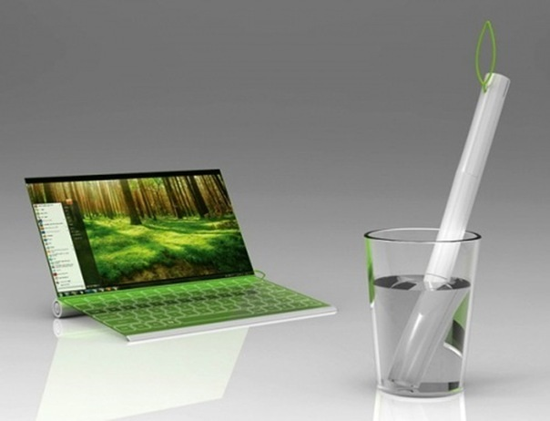

БУДУЩЕЕ НАЧАЛОСЬ - PLANTBOOK

Пожалуй, на сегодняшний день Plantbook можно назвать самым необыкновенным концептом ноутбука.
Его авторами являются – корейцы Hyerim Kim и Seunggi Baek . Своим воображением они буквально поразили весь мир технологий!
У ноутбука Plantbook гибкий дисплей, сенсорная клавиатура, и… он сворачивается в трубочку ! Также для его зарядки можно не просто использовать обыкновенную солнечную энергию, но и воду! Невероятно то, что при этом гаджет вдобавок вырабатывает кислород! Чтобы все понять владельцу ноутбука, была создана специальная петелька в виде листика, которая отображает уровень заряда батареи.
Разработка уже заинтересовала многих инвесторов, так как это первая многообещающая функциональная технология, которая, в первую очередь, не только модная и актуальная, но и максимально рассчитана на заботу о природе и ее экологии.
Назад